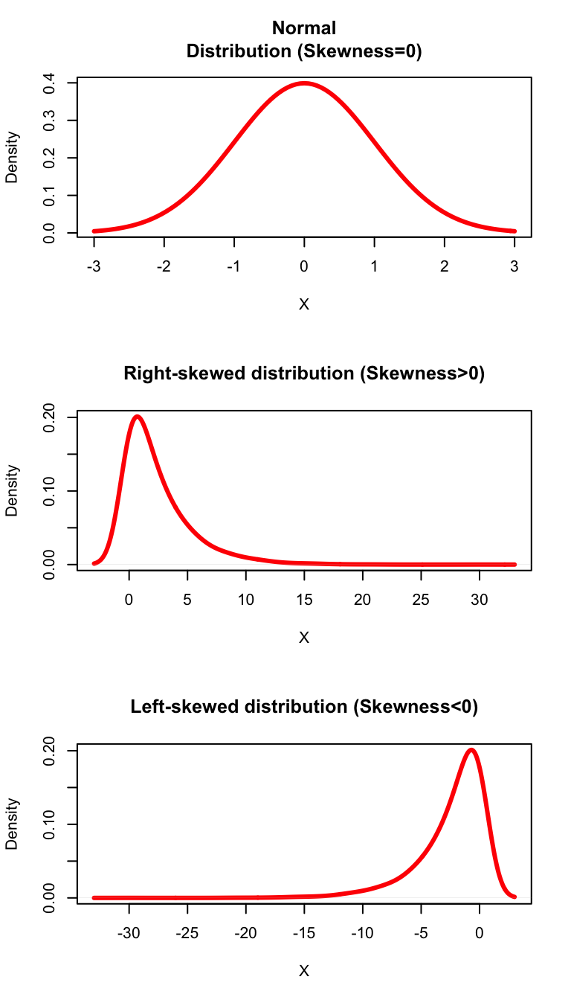

B Appendix B: Review of Probability and Statistics
Given that all students must have taken a course in statistics before enrolling for this class, it is assumed that everyone in the class is comfortable with concepts such probability, expected value, measures of central tendency, hypothesis testing etc. In this chapter, I will provide a brief review of some concepts that are most pertinent for Econometrics. I strongly encourage that you read your lecture notes for Statistics if you find it difficult to follow the material presented in this chapter.
B.1 Probability
We begin with a brief review of probability thoery. To define probability we first need to develop an understanding of what we mean by experiment, sample space, and event in statistics.
Definition B.1 (Experiment) An experiment is a process with an uncertain observable outcome. e.g. Toss of a coin can have two possible outcomes, heads or tails.
Definition B.2 (Sample Space) The sample space is the set of all possible outcomes of an experiment. I will denote it by \(S\). If we toss a coin then \(S=\{Heads,Tails\}\).
Definition B.3 (Event) An event is a subset of the sample space. I will denote it by \(E\). If we toss a coin and Heads shows up then \(E={Heads}\).
Now, we can define probability, which is a function that assigns a numerical value to the chance of an event occuring among all possible events in the sample space.
Definition B.4 (Probability) A function \(P\) is called a probability function if:
- For any given event, \(E\), \(0 \leq P(E)< \leq 1\).
- Suppose there are N possible events in S, i.e., \(S=\{E_1, E_2, E_3,..,E_N\}\). Then, \[P(E_1)+P(E_2)+P(E_3)+...+P(E_N)=1\]
- Consider an event E. Then,
\[P(\lnot E) = 1 -P(E) \]
If we have two disjoint events \(A\) and \(B\), then:
- \(P(A \cup B)= P(A) + P(B)\)
- \(P(A \cap B)=0\)
If we have two non-disjoint events \(A\) and \(B\), then:
- \(P(A \cup B)= P(A) + P(B)-P(A \cap B)\)
- \(P(A \cap B)= P(A) \times P(B|A)\)
If we have two independent events \(A\) and \(B\), then: \[P(A \cap B) = P(A) \times P(B)\]
Bayes rule:
\[P(A|B)=\frac{P(A) \times P(B|A)}{P(B)}\]
where \(\displaystyle{P(B)= P(B|A)\times P(A) + P(B|\lnot A) \times P(\lnot A)}\)
One such probability function is: \[\begin{align} P(E) = \frac{\text{Number of outcomes in E}}{\text{Number of outcomes in S}} \end{align}\]
Example B.1 Consider a fair six-sided dice. The probability of obtaining an odd number if this dice is rolled once is given by 0.5. To see this, note that the event here is obtaining an odd number when a dice is rolled. Hence, \(E=\{1,3,5\}\). Also, \(S=\{1,2,3,4,5,6\}\). Using this, we get: \[\begin{equation} P(E)=\frac{3}{6}=0.5 \end{equation}\]
B.2 Random Variable
One of the most important applications of statistics is to resolve the randomness that is inherent in most economic choices. For example, the outcome of your college major is a random variable with many possible values. Most economic variables can be thought of as random variables that have many possible values which are unknown until they are realized. We will begin by formally defining a random variable.
Definition B.5 (Random Variable) A random variable is a numerical representation of outcomes of an experiment. For example, in the example of a toss of a coin, suppose you win $10 if heads shows and you lose $5 if tails shows. In this case, tossing the coin was the experiment, and winnings from this game is the random variable with two possible values: $10 and -$5.
There are two types of random variables.
Discrete random variable: takes finite number of values. e.g. GPA points earned in Econ 385.
Continuous random variable: can take any value on the number line. e.g. GDP in the last quarter of 2019.
B.3 Probability distribution
By definition a random variable can take many possible values. In statistics a function that provides the probabilties of different realizations of a random varuable is called its probability distribution.
B.3.1 Probability distribution of a discrete random variable
For a discrete random variable the probability distribution is simply the list of all possible values this variable can and their corresponding probabilities. Let \(X\) be a discrete random variable with \(n\) possible values give by \(\{x_1,x_2,x_3,..,x_n\}\). Let \(p_i\) denotes that probability that \(X=x_i\). Then, the probability distribution function of this random variable is given by:
| X | p(X) |
|---|---|
| \(x_1\) | \(p_1\) |
| \(x_2\) | \(p_2\) |
| \(x_3\) | \(p_3\) |
| \(\vdots\) | \(\vdots\) |
| \(x_n\) | \(p_n\) |
Example B.2 (Grade Distribution) A typical grade distribution is an example of a discrete random variable. Consider the following grade distribution:
| GPA | Percent of Students |
|---|---|
| \(0\) | \(10\%\) |
| \(1\) | \(20\%\) |
| \(2\) | \(40\%\) |
| \(3\) | \(20\%\) |
| \(4\) | \(10\%\) |
Note that every GPA point corresponds to a letter grade. From the perspective of the student, \(X\) is the random variable that is his letter grade, and the above distribution gives the probability of obtaining a particular letter grade. We can plot this simple probability distribution as follows:
Figure B.1: Probability Distribution of Letter Grades
We can use the probability distribution of a discrete random variable in two different ways.
- We can compute the probability of the random variable taking an exact value. This is known as the probability mass function (p.m.f) and is denoted by \(f(x)\):
\[f(x)=P(X=x)\]
For example, the probability of obtaining a letter grade of C or \(P(X=2)\) is 0.4 or 40%.
- We can also infer the probability that a discrete random variable will be less than or equal to a certain value by cumulatively adding the probabilities. Formally, we can compute the cumulative probability distribution (c.d.f) which is denoted by \(F(x)\):
\[F(x)=P(X\leq X)\]
Going back to our grade distribution example, we can add the column of cumulative probabilities to obtain the \(c.d.f\):
| Grade | Percent of Students | \(F(x)\) |
|---|---|---|
| \(0\) | \(10\%\) | \(10\%\) |
| \(1\) | \(20\%\) | \(30\%\) |
| \(2\) | \(40\%\) | \(70\%\) |
| \(3\) | \(20\%\) | \(90\%\) |
| \(4\) | \(10\%\) | \(100\%\) |
So for example, we can infer that the probability of obtaining the letter grade of C or lower i.e, \(P(X\leq 2)\) is 0.7 or 70% which is obtained by adding the probabilities of obtaining letter grades of C, D, and F, respectively.
Example B.3 (Bernoulli Random Variable) When a random variable is binary then we call it a Bernoulli random variable and its probability distrubition is called Bernoulli distribution. Consider a random variable that can only take two values, say, \(0\) or \(1\). It is common to think of these two values as coding a set criterion with \(1\) typically assigned if the criterion is met and \(0\) is assigned for failing to meet the criterion. For example, \(X\) could be whether you will get a job right after graduation. If you do then \(X=1\) and if you do not then \(X=0\). Let \(p\) denotes the probability that you will get a job. Then, the \(p.m.f.\) of the Bernoulli distribution is given by:
\[f(x)=\begin{cases} p & if \ X=1\\ 1-p & if \ X=0 \end{cases}\]
The \(c.d.f\) of the Bernoulli distribution is given by:
\[F(x)=\begin{cases} 0 & if \quad X < 0\\ 1-p & if \quad 0\leq X<1\\ p & if \quad X\geq 1 \end{cases}\]
B.3.2 Probability distribution of a continuous random variable
In economics a large majority of variables of interest in theory are continous random variables. For example, the change in the price of Apple stock between two time periods is the return on Apple stock. If you are a trader in the NYSE then the stock return on Apple is a continuous random variable that can take any value on an interval. In such a case we cannot obtain the probability of the random variable taking an exact value. But we can only compute the probability that this random variable will fall in a given interval. So at best we can determine the probability that GDP growth for the US next quarter will be between say 1/% and 2%. This probability is obtained by computing the area under the probability density function (p.d.f). Let \(X\) denote a continuous random variable and \(f(x)\) denotes the p.d.f. Then,
- The probability that \(X\) takes value over the interval \(\{a,b\}\) is given by:
\[P(a\leq X \leq b)=\int_a^bf(x) \ dx\]
- The c.d.f (the probability that \(X\leq x\)) is given by:
\[F(x)=P(X\leq x)=\int_{-\infty}^xf(x) \ dx\]
Below I plot the empirical c.d.f for Apple’s stock return. Let \(X\) denotes this stock return. From Fig 3.2 we can infer that \(P(X\leq 0)=0.47\) and \(P(X\leq 3)=0.95\).
Figure B.2: Empirical c.d.f of daily Apple Stock Return (2007-2019)
Figure 3.3 below presents the p.d.f of the daily stock return that corresponds to the c.d.f plotted in Figure 3.2. Using this we can work the probability of stock returns falling in any given interval. For instance, the probability that Apple stock return will fall between 0 and 3% is the area under the p.d.f. between these two values. Figure 3.3 higlights this area and we can see that this probability is equal to 0.47.

Figure B.3: Empirical p.d.f of daily Apple Stock Return (2007-2019)
B.4 Moments of a probability distribution function
The information contained in a probability distribution can be meaningfully summarized into measures that are called moments of that distribution. There are three moments we often use in economics:
Center of the distribution: this is first moment of a given probability distribution and it gives us the most likely value of the random variable. It can be measured by mean, median or mode. We will use mean as a measure of the center of the distribution.
Width of the distribution: this is the second moment and it measures the average distance from mean under a given probability distribution. We will use standard deviation as a measure of the width of the distribution.
Shape of the distribution: this feature relates to role played by tail events , i.e., events that have very low probability of happening under a given probability distribution. Two relevant measures are Skewness and Kurtosis
B.4.1 First moment of a probability distribution: Expected value
What is the most likely value of a random variable? To answer that we often compute expected value of the random variable which gives us the center (or peak) of the underlying probability distribution. We will use E to denote expected value. So \(E(X)\) is the expected value of a random variable and we will use \(\mu_X\) to denote the mean or average value of \(X\).
Definition B.6 (Expected Value) Consider a discrete random variable \(X\) that can take \(n\) possible values and has the following probabilty distrubution:
| X | p(X) |
|---|---|
| \(x_1\) | \(p_1\) |
| \(x_2\) | \(p_2\) |
| \(x_3\) | \(p_3\) |
| \(\vdots\) | \(\vdots\) |
| \(x_n\) | \(p_n\) |
Then, the expected value of \(X\) is given by:
\[E(X)= x_1 p_1 + x_2 p_2+...+ x_n p_n = \sum_{i=1}^n y_ip_i\]Solution. Let \(X\) denotes winnings from this game. It can take a value of $10 with a probability of 0.5 and 0 with a probability of half. So the expected value of X is:
\[E(X) = x_1 p_1+x_2 p_2=10\times 0.5 + 0\times 0.5=\$5\]Solution. Let \(X\) denotes expected return in dollars. It can take 3 possible values: $1000 with a probability of 0.1, $200 with a probability of 0.5, and -$400 with a probability of 0.4 The expected value is given by:
\[E(X) = 1000\times 0.1 + 200 \times 0.5 - 400 \times 0.4=\$40 \]As mentioned earlier, the first moment of the probability distribution (i.e., the expected value) gives us the most likely value of the random variable. How useful is this knowledge will depend on how far any realiaztion of the random variable can be from its expected value. The average distance from the average measures the width of the distribution. Wider the distribution, less useful is the knowledge of the expected value.
B.4.2 Second moment of the distribution.
To determine the width or dispersion of a probability distribution we use variance or standard deviation. The variance is the expected value of the squared deviation of each realization of the random variable from its average. We will denote the variance by \(Var(X)\) or \(\sigma^2_X\):
\[Var(x)= \sigma^2_X=E[(X-\mu_x)^2]= (x_1-\mu_X)^2 \times p_1+(x_2-\mu_X)^2 \times p_2+...+ (x_n-\mu_X)^2 \times p_n =\sum_{i=1}^n (x_i-\mu_x)^2p_i\]
The standard deviation is simply the square root of the variance and is in the same units as the random variable. This allows easy comparison of the width and the center of the distribution. We will denote standard deviation by \(\sigma_X\).
Example B.6 Using the mutual fund example, the variance will measure riskiness of the investment. It is given by:
\[Var(X)=(1000-40)^2\times 0.1 + (200-40)^2 \times 0.5 - (400-40)^2 \times 0.4=53120\]
Because variance is in square units and hence hard to interpret, we can easily compute the standard deviation as the square root of the variance:
\[\sigma_X=\sqrt{53120}=\$230.47\]
Hence, even though the average return from this investment is $40, you can be $230 above or below this average.How much can we say about a random variable if we only know its mean and the standard deviation? That depends on the type of distribution the random variable follows. One of the most commonly used distribution in statistic is the Normal Distribution or the Gaussian Distribution. A random variable that follows normal distribution has a bell-shaped probability distribution with a given mean and standard deviation. One of the most useful features of such a distribution is that knowledge of the first two moments alone is sufficient to characterize the entire probability distribution. Figure 3.4 below shows a normal distribution with a mean of 5 and a standard deviation of 2.

Figure B.4: Normal distribution with mean=5 and s.d.=2
Key features of the normal distribution that are very useful for us:
- 95% of the values fall within 1.96 times the standard deviation of the mean:
\[P(\mu_X -1.96\sigma_X \leq X \leq \mu_X + 1.96\sigma_X)=0.95\]
Tail events (low probability events) on either side of the mean are equally unlikely.
Central limit theorem: The distribution of sample means calculated from repeated random sampling from a given population approaches a normal distribution as the sample size approaches \(\infty\).
B.4.3 Third and Fourth Moments: Skewness and Kurtosis
In many cases, the distribution of a random variable is not normal and in such cases higher moments provide useful information about the shape of such probability distribution. The shape of the probability distribution plays an important role in many economic and financial applications. There are two measures of shape that are of interest:
- Skewness: this is the third moment of the distribution and it measures how skewed a distribution is. The formula for skewness is given by:
\[Skewness=\frac{E[(X-\mu_X)^3]}{\sigma^2_X}\]
A normal distribution has a skweness of zero. There are two possible types of skewed distributions:
A positively skewed distribution will have a long right tail implying lower probability of very large values relative to the mean.
A neagtively skewed distribution will have a long left tail implying lower probablity of very small values relative to the mean.
Figure 3.5 shows three probability distributions. For the left-skewed distribution, a longer left tail indicates low probability of obtaining values below the mean. Similarly, for the right-skewed distribution, a longer right tail indicates low probability of obtaining a value above the mean. For a normal distribution, the probability of obtaining a value above the mean is the same as the probability of obtaining a value below the mean.

Figure B.5: Skewness of a Probablity distribution
- Kurtosis: this is the fourth moment of the distribution that captures the peakedness of the distribution (or thickness of the tail), i.e., how many observations fall on the extreme ends of a given probability distribution. As a result it tells us the role played by extreme values in driving the variance of a random variable. The formula is given by:
\[Kurtosis=\frac{E[(X-\mu_X)^4]}{\sigma^4_X}\]
A normal distribution has a Kurtosis of 3. A value that is above or below 3 will give us excess or deficient Kurtosis. Two possiblities are:
Leptokurtic distribution: has a Kurtosis value greater than three. Such a distribution will have fat tails compared to a normal distribution indicating greater area under the tails.
Platykurtic distribution: has a Kurtosis value less than 3. Such a distribution will have thin tails compared to a normal distribution.

Figure B.6: Kurtosis of a Probablity distribution
Fig 3.6 shows three types of distribution based on their Kurtosis. The leptokurtic distribution has a Kurtosis value of greater than 3 and is more heavy-tailed or peaked than a norma distribution.
B.5 Useful probability distributions
Using the normal distribution we can derive a few useful probability distributions that are utilized in hypothesis testing.
Standard Normal Distribution: A random variable that follows normal distribution with a mean of 0 and standard deviation of 1.
Chi-square distribution: is obtained by squaring and adding indpendent standard normal distribution. For example, is \(X\) and \(Y\) are two standard normal random variables, then \(Z=X^2 + Y^2\) follows a Chi-square distribution with two degrees of freedom.
F-distribution: is obtained by taking a ratio of two chi-square distribution. For example, if \(X\) is Chi-square with \(v_1\) degrees of freedom and \(Y\) is a Chi-quare with \(v_2\) degress of freedom, then \(\displaystyle{Z=\frac{X}{Y}}\) follows F-distribution with \(v_1\) and \(v_2\) degrees of freddom.
t-distribution: Student’s t-distribution is obtained by taking a ratio of a standard normal and the square root of a Chi-square random variable. For example, if \(X\) is a standard normal and \(Y\) is a Chi-square with \(m\) degrees of freedom, then \(Z=\displaystyle\frac{X}{\sqrt{Y/m}}\) follows t-distribution with \(m\) degrees of freedom. t-distribution has fatter tails when compared to normal.

B.6 Joint Probability Distribution
In economics, often we are interested in the relationship between a pair of variables. For example, how does interest rate affects consumption spending? Or how does education affect wages? In order to statistically answer such questions, we need to understand the meaning of statistical relationship between two or more variables. One way to move forward is to assume that both variables jointly follow some given probability distribution which can be used to infer their relationship with one another.
For simplicity, I will use the discrete random variables case but the concepts covered can be easily extended for the continuous random variables case.
Let \(X\) and \(Y\) denote two random variables of interest, both from a common probablity distribution denoted by \(F(x,y)\). This function gives us the probability that \(X\) and \(Y\) simultaneously take on certain values:
\[F(x,y)=P(X=x, Y=y)\]
Example B.7 Suppose you are an investment banker and you are considering investment into two assets: a stock listed in NYSE (\(X\)) and a cotton futures (\(Y\)) listed in Chicago Mercantile Exchange. Suppose \(X\) can take three possible values: 2/%, 3/%, or 4/%. Similarly \(Y\) can take three possible values given by 6/%,4/%, or 1/%. The value will depend on the state of the economy. Suppose there are three possiblities for the economy next year: boom, expansion, and status quo. The joint probability distribution for \(X\) and \(Y\) is given by:
| State of Economy | X/Y | 6 | 4 | 1 | Total |
|---|---|---|---|---|---|
| Recession | 2 | 0.15 | 0.2 | 0.1 | 0.45 |
| Expansion | 3 | 0.1 | 0.1 | 0.2 | 0.4 |
| Status quo | 4 | 0.1 | 0.05 | 0 | 0.15 |
| Total | 0.35 | 0.35 | 0.3 | 1 |
So in a recession, the probability of obtaining a return of 2/% on the stock and 6/% return on the commodity, i.e, \(P(X=2,Y=6)\), is 0.15. Using the above joint probabity distribution of \(X\) and \(Y\) we can compute two related distributions for each random variable:
- Marginal distribution: For each random variable, we can extract its own probability distribution from the joint probability distribution. This is done by simply adding probabilities of all possible outcomes for a particular value of a given random variable. For example, the marginal distribution for \(X\) is given by:
\[P(X=x)=\sum_{i=1}^nP(X=x, Y=y_i)\]
Hence, in our example, the marginal distribution of \(X\) is given by the last column, called Total in the table. For \(Y\) it is the row called Total. We can use the marginal distribution to compute the unconditional expected value of each random variable. For example,
\[E(Y) = 6 \times P(Y=6) + 4 \times P(Y=4)+1 \times P(Y=1)=3.8\]
- Conditional distribution: For each random variable, we can also compute its probability distribution conditional on the other variable taking on a specific value. For exampl,e the conditional distribution of \(Y\) given that \(X=x\) is given by:
\[ P(Y=y|X=x) =\frac{P(X=x,Y=y)}{P(X=x)}\]
From our example, what is the probability of obtaining 4% return on commodity under status quo if the return on the stock is 4%? So here we are interested in finding out:
\[ P(Y=4|X=4) =\frac{P(X=4,Y=4)}{P(X=4)}= \frac{0.05}{0.15}=0.33\]
To see this, note that from the table that P(X=4, Y=4) under status quo is given by 0.05. Also, using the definition of marginal distribution, we know that P(X=4)=0.15.
The conditional distribution of a random variable is a first step toward understanding the statistical relationship between two or more random variables. Just like the probability distribution of a random variable has a mean and a variance, the conditional distribution can similarly be characterized by conditional mean and conditional variance:
- Conditional expected value (\(E(Y|X)\)): Using the conditional distribution we can now compute the expected value of a random variable, given the value of another random variable. This is denoted by \(E(Y|X)\) and can be computed as follows:
\[E(Y|X)=y_1 \times P(Y=y_1|X=x) + y_2 \times P(Y=y_2|X=x)+...+ y_n \times P(Y=y_n|X=x)\]
As we can see, this expected value will be a function of \(X\). Depending on the realization of \(X\) our expectation of \(Y\) would change. In economics, we can imagine many such examples. For example, given our education level our expected wage will change. Similarly, given expenditure on advertising, expected sales will change. Hence, conditional expected value goes a long way in establishing statistical relationship between economic variables.
Going back to our example, let us compute the expected return on the commodity \(Y\) conditional on the information that the return on \(X\) is 3%:
\[E(Y|X) = 6 \times P(Y=6|X=3) + 4 \times P(Y=4|X=3) + 1 \times P(Y=1|X=3)\]
Here, \(P(Y=6|X=3)= \displaystyle\frac{0.1}{0.4}=0.25\), \(P(Y=4|X=3)= \displaystyle\frac{0.1}{0.4}=0.25\) and \(P(Y=1|X=3)= \displaystyle\frac{0.1}{0.2}=0.5\). Hence, \(E(Y|X=3)=3\%\). Contrast this to the uncondtional expected value of \(Y\) of 3.8% we computed earlier.
- Conditional variance (\(Var(Y|X)\)): Now even the variance of a random variable can be affected by another random variable. Here, we are interested in deviations of the random variable from its conditional mean:
B.7 Measures of statistical association
We can now define two measures of statistical relationship. The first one is called Covariance and the second is Correlation.
- Covariance is a measure of association that captures how deviations from mean of one random variable are related to deviations of another random variable to its respective mean. For example, if your hours of study are above average, then what is your test score relative to average? Formally,
\[Cov(X,Y) = E(Y-\mu_Y)(Y-\mu_X)\]
If the above number is positive, then there is a positive relationship between \(X\) and \(Y\). That is, when \(X\) is above its mean then \(Y\) is also above its mean. If the number is negative then there is a negative relationship between \(X\) and \(Y\).
Note that because \(X\) and \(Y\) are often in different units of measurement, the number we obtain for covariance has no meaning or implication for the strength of the relationship between two variables.
- Correlation: is the value of covariance that is standardized by dividing this number by standard deviations of each random variable:
\[Cor(X,Y) = \frac{Cov(X,Y)}{\sigma_X \times \sigma_Y }\]
This number is unit free and falls between \(-1\) and \(1\). The sign of the correlation tell us about the direction of the relationship whereas the value of the correlation gives information about the strength of the relationship. A higher absolute value indicates stronger statistical relationship between two variables.
B.7.1 Rules of expectation and variances
Here are some useful rules that are useful for our purpose:
- \(E(\beta)=\beta\) and \(Var(\beta)=0\) where \(\beta\) denotes a constant.
\(E(\beta X)= \beta E(X)\) and \(Var(\beta X)= \beta^2 Var(X)\) where \(\beta\) denotes a constant.
Consider two random variables \(X\) and \(Y\), and let \(a\) and \(b\) denotes two constants. Then,
3.1. \(E(aX+bY)=aE(X)+bE(Y)\)
3.2. \(E(aX-bY)=aE(X)-bE(Y)\)
3.3. \(Var(aX+bY)=a^2 Var(X)+b^2 Var(Y)+2abCor(X,Y)\sqrt{Var(X)}\sqrt{Var(Y)}\)
3.4. \(Var(aX-bY)=a^ 2Var(X)+b^2 Var(Y)-2abCor(X,Y)\sqrt{Var(X)}\sqrt{Var(Y)}\)
B.8 Sampling and Estimation
An important distinction in statistics is between the population of interest and a sample of this population that we usually work with. Due to feasibility of data collection and cost both in terms of time and money, most real world analysis is based on a sample that is a subset of the population of interes. For example, to study how business major affects starting salary, the relevant population is all business majors from a graduating class in the U.S. in a given year. In practice however, we will most likely use a sample of this population, for example all business majors from JMU. How useful an analysis based on a sample is depends on how representative the chosen sample is of the entire population.
For our purpose, lack of data on population means that the true probablity distribution of a random variable is unknown and hence the true values of mean, variance, covarinace etc are also unknown to us. Statistics provides a way of using samples to estimate relevant moments of the probability distribution. The approach we take is as follows:
Consider the unknown moments of the true probability distribution as ** population parameters** that we would like to estimate.
Draw a representative sample from the population. In simple random sampling we draw \(n\) obeservations at random so that each member of the population is equally likely to be included in the sample. We can also use other complex sampling schemes where certain groups of population are more likely to be selected in the sample than others. Two examples:
Suppose we are interested in finding out starting salary of CoB majors at JMU. The population will be every graduating student for a given year. However, we may work with a sample of students, where we draw randomly from every major ensuring that all graduating students have equal probability of selection.
Suppose we are interested in finding out usage of food stamps in Harrisonburg area. The population of interest will be all residents of Harrisonburg who use food stample. However, we may work with a sample where a certain demographic group is more likely to be part of the sample (and hence is oversampled).
Use the sample to compute sample estimates for each population parameter of interest. For example for expected value we can use sample mean as an estimator, for variance we can use sample variance as an estimator and so on. There are following key differences between population parameters and their sample estimates:
Population parameters are true but unknown values that we are interested in measuring. In contrast, sample estimates can be computed using our sample data.
Population parameters are fixed whereas sample estimates change as we change our sample. For example, if we compute mean starting salary of business majors from JMU we get one number. If use data from UVA we get another number for mean starting salary.
Because different samples give us different sample estimates for the same population parameter, we need to ensure that our sample estimator from one sample data is reliable.
Sampling distribution: Hypothetically, we can draw many samples from the same population and compute sample estimate for each sample. This will give us a distribution of for the sample estimate which will have its own mean and variance. We can use this sampling distribution to:
- Establish reliablity of the sample estimator. Specifically any sample estimator should be unbiased and efficient. More on this in the next section.
- Statsitically test hypotheses about the true population parameter ### Unbiasedness and efficiency
Let \(\theta\) denote a population parameter of interest. For example, it can be the mean of the random variable of interest. Let \(\widehat{\theta}\) denotes a sample estimator of \(\theta\) that can be computed using sample data. Then,
- \(\widehat{\theta}\) is an unbiased estimator of \(\theta\) if:
\[E(\widehat{\theta})=\theta\]
The idea here is that if we repeatedly draw a sample from the same population and compute \(\widehat{\theta}\) for each such sample, the average of these estimators must be equal to the true population parameter for unbiasedness. In otherwords, the center of the sampling distribution is at the true population parameter value.
We can now define bias of an estimator as follows:
\[Bias(\widehat{\theta}) = E(\widehat{\theta})-\theta\]
For an unbiased estimator, \(Bias(\widehat{\theta})=0\). If \(Bias(\widehat{\theta})>0\) then we have an over-estimate and if \(Bias(\widehat{\theta})<0\) then we have an under-estimate.
- Efficiency: Unbiasedness ensure that the average of sample estimator is equal to the true population parameter. But if the standard deviation of the sample estimator is too high, then knowing that the average is close to the true value is not very useful. In statistics, we call such an estimator unbiased but imprecise or inefficient. To be efficient the standard deviation (or variance) of the sample estimator should be as small as possible. Between two unbiased estimators, a more efficient estimator will have a lower variance.
Example B.8 Suppose we have a random sample with \(n\) observations: \(\{x_1,x_2,...,x_n\}\) drawn from a population with a mean of \(\mu_x\). Sample mean is defined as:
\[\overline{X}=\frac{\sum_{i=1}^N x_i}{N}\]
The expected value of the sample mean is given by:
\[E(\overline{X})=E\left(\frac{\sum_{i=1}^N x_i}{N}\right)\]
Using properties of the expected value, we get:
\[E(\overline{X})=\frac{E(x_1)+E(x_2)+...+ E(x_N)}{N}\]
Note that because this is a random sample from the same population with a mean of \(mu_x\), we get \(E(x_1)=E(x_2)=..=E(x_n)=\mu_x\). Hence,
\[E(\overline{X})=\frac{\overbrace{\mu_x+\mu_x+...+\mu_x}^{\text{N terms}} }{N}=\mu_x\]
As a result the sample mean is an unbiased estimator of the population mean. However, there are many other possible unbiased estimators of the population mean. We can show that among all other unbiased estimator of the population mean, sample mean has the lowest variance and hence is most efficient estimator as well.
Definition B.7 (Best Unbiased Estimator (BUE)) Let \(\theta\) denote a population parameter of interest. Then, an sample estimator denoted by \(\hat{\theta}\) is the of \(\theta\) if the following two conditions are satisfied:
\(\hat{theta}\) is an unbiased estimator, i.e., \(E(\hat{\theta})=\theta\). In this case the sampling distribution is centered at the true value of the parameter.
- \(\hat{\theta}\) is an efficient estimator, i.e., \(Var(\hat{\theta})< Var(\hat{\theta_A})\) for any other unbiased estimator denoted by \(\hat{\theta_A}\). In this case the width of the sampling distribution around the mean is smallest possible.
B.9 Hypothesis testing
An important part of any statistical analysis is testing various hypotheses about population parameters of interest. This is known as and here we use the sampling distribution of the estimator to formally test whether the corresponding population of interest takes a certain value or not. This is important because even with an best unbiased estimator we do not know the true value of the population parameter of interest. In this section we will look at two types of hypotheses testing procedures that are most relevant for Econometrics. The procedure for any statistical test more or less consists of the following steps:
Formulate a hypothesis of interest. This typically manifest as a restriction on the value of a population parameter (or a combination of multiple parameters). The goal is to test whether there is support for this restriction in our sample or not. There are two types of hypotheses that we must formulate:
1.1. Null Hypothesis (\(H_0\)): A null hypothesis is the statement about the population parameter we assume to be true until we find evidence otherwise. For example, we can test whether the population mean of starting salary for CoB majors is $60,000. Formally,
\[H_0: \mu_X = 60,000\]
Note that the null hypothesis statement is an equality condition.
1.2. Alternative Hypothesis (\(H_A\)): This is the logical counterpart of the null hypothesis and here we specify. There are two types of alternative hypothesis we can specify:
Two-sided alternative: Here, the alternative hypothesis statement allows for both sides of the inequality. Going back to our example of starting salary, a two-sided alternative will be:
\[H_A: \mu_X \neq 60,000\]
One-sided alternative: Here, we either use a greater or less than sign for the alternative hypothesis. So for example, we can speficy the following one-sided alternative:
\[H_A: \mu_X > 60,000\]
Compute the relevant test statistic that is a function of the sample data. The formula for the test statistic is a function of the sample estimator and the value of the population parameter(s) we assumed in the null hypothesis.
The test statistic is assumed to follow a certain probability distribution under the assumption that the null hypothesis is correct. The tails of this distribution summarizes values of the test statistic that are less likely to realize. Such a value of the test statistic provides us a threshold level, called the , beyond which the test statistic values are less likely to realize if our hypothesis is true. The decision rule for rejecting or not rejecting the null hypothesis is based on the comparison between the computed test statistic and the associated critical value.
Note that there is always a measure of uncertainty in any hypothesis testing: we may end up making a wrong decision. There are two types of errors we can make here:
Type I error: here we reject \(H_0\) when it is true. The probability of this type of error is denoted by \(\alpha\) and is called the level of significance of a test.
Type II error: here we do reject \(H_0\) when it is false. The probability of this type of error is related to the power of a test.
Ideally we would like to minimize the probability of both types of errors but we cannot do that because reducing one error comes at the cost of increasing the other. As a result, we first specificy an acceptable level of significance (type one error probability) and then try to minimize the probability of type two error (or maximize the power of the test). It is common to assume a level of signficance of 5% or \(\alpha=0.05\). So here we are willing to tolerate a 5% chance of falsely rejecting the null hypothesis.
Once we have fixed the level of significance, we can use the distribution table of the test-statistic to obtain the corresponding critical value(s).
B.9.1 Testing a restriction on a single population parameter
Here our goal is to develop tests for testing statements about a single population parameter of interest. So for example, we can either test a statement about a population mean or a population variance.
Example B.9 (t-test for population mean) Suppose you are interested in measuring mean hourly wage of males aged 25-35. Accordingly, we collect a sample of 100 workers from the population of male in this age group with a mean of \(\mu_X\) and a standard deviation of \(\sigma_X\). The sample mean is \(\hat{\mu}_X=\$25\) and the sample standard deviation is \(\hat{\sigma}_X=\$7\). Now, suppose we want to test the following hypothesis:
\[H_0: \mu_X=27\]
\[H_0: \mu_X \neq 27\]
The test statistic is given by the t-statistic where:
\[t=\frac{\hat{\mu}_X-\mu_X}{s.e.(\hat{\mu}_X)} \]
where \(s.e.(\hat{\mu}_X)=\displaystyle \frac{\hat{\sigma}_X}{\sqrt{N}}\) is the standard error of sample mean and N denotes sample size.
If the null hypothesis is true, this test statistic follows t-distribution with N-1 degrees of freedom. Using the t-distribution table we can then compute the critical value which is used in formulating the decision rule. Let \(t_c\) denote this critical value from the distribution table. Then,
\[|t|>t_c \quad \Rightarrow \text{reject $H_0$} \]
\[|t|<t_c \quad \Rightarrow \text{do not reject $H_0$} \]
In our example, \(N=100\), and
\[t=\frac{25-27}{\frac{7}{\sqrt{100}}}=-2.86\]
The degrees of freedom is \(N-1=99\) and at 5% level of significance the critical value from the t-distribution table is \(t_c=1.98\). Because |t| is larger than the critical value, we reject the null hypothesis. Hence, we find evidence against the statement that the mean hourly wage of male workers is $25.
Note that an alternative way of testing hypothesis like this is to use the p-value rule. The underlying idea is to find out the largest significance level at which we will fail to reject the null hypothesis. This value is called the p-value and most statistical softwares report this value. The decision-rule is then greatly simplified:
\[\text{If p-value is less than the chosen level of significance (value of $\alpha$) then reject $H_0$.}\]
In our case, the p-value is 0.0053. Because we chose \(\alpha=0.05\), according to the p-value rule we will reject the null hypothesis.
Example B.10 (Chi-square test for population variance) Using the same example, we also test a statement about the population variance. Suppose we want to test whether the variance of the hourly wage is 52.
\[H_0: \sigma^2_X=52\]
\[H_0: \sigma^2_X >52 \]
The test statistic is given by the V-statistic where: \[V=\frac{(N-1)\times \hat{\sigma^2_X}}{\sigma^2_X}\]
If the null hypothesis is true, this test statistic follows Chi-square distribution with N-1 degrees of freedom. Using the distribution table we can then compute the critical value which is used in formulating the decision rule. Let \(V_c\) denote this critical value from the distribution table. Then,
\[V>V_c \quad \Rightarrow \text{reject $H_0$} \]
\[V<V_c \quad \Rightarrow \text{do not reject $H_0$} \]
In our example,
\[V=\frac{(100-1)\times 7^2}{52}=93.29\]
The degrees of freedom is \(N-1=99\) and at 5% level of significance the critical value from the Chi-square distribution table is \(V_c=43.77\). Because \(V\) is larger than the critical value, we reject the null hypothesis. Hence, we find evidence against the statement that the variance of the hourly wage of male workers is 52.B.9.2 Testing a restriction on multiple population parameter
Often we are interested in testing a restriction that is a linear combination of two or more population means. Similarly, we maybe interested in comparing the variance of two different populations. In such cases we need to develop statistical tests that allow for comparison between parameters of different populations with given means and variances.
Example B.11 (t-test for comparing population mean of two populations) Suppose you are interested in comparing mean weekly hours studied by Econ majors (X) and non-Econ majors in the college of business. For this purpose, you collect a sample of 25 econ majors and a sample of 30 non-econ majors. The sample mean of weekly hours studied by econ majors is 10 hours with a standard deviation of 4 hours. The sample mean of weekly hours studied by non-econ majors is 8 hours with a standard deviation of 2 hours. Also suppose that the covariance between weekly hours studied by econ and non-econ majors is 0.12. Test whether mean weekly hours studied by econ majors is more than the mean weekly hours studied by non-Econ majors.
Let \(X\) denote hours studied, \(N_X\) denotes sample size, \(\hat{\mu}_X\), and \(\hat{\sigma}_X\) denote sample mean and standard deviation, respectively for econ majors. Similarly, let \(Y\) denote hours studied, \(N_Y\) denotes sample size, \(\hat{\mu}_Y\), and \(\hat{\sigma}_Y\) denote sample mean and standard deviation, respectively for non-econ majors.
The first step, as usual, is to formulate the null and the alternative hypotheses:
\[H_0= \mu_X - \mu_Y = 0\] \[H_A= \mu_X - \mu_Y > 0\]
The next step is to compute the relevant test statistic, which in this case is the t-ratio given by:
\[t= \frac{(\hat{\mu_X}-\hat{\mu_Y})-0}{s.e.(\hat{\mu_X}-\hat{\mu_Y})}\]
Using the properties of variance, we get: \[s.e.(\hat{\mu_X}-\hat{\mu_Y})=\sqrt{Var(\hat{\mu_X})+Var(\hat{\mu_Y})-2 \times Cor(X,Y)\times s.e.(\hat{\mu_X}) \times s.e.(\hat{\mu_Y})}=0.84\]
So, \(t=\displaystyle \frac{10-8}{0.84}=2.38\)
The sample size here is \(N_X+N_Y=55\). Using 5% level of significance and degrees of freedom of 53, the critical value from the t-distribution table for the one-sided alternative is 1.67. Because the |t| is more than 1.67, we reject the null hypothesis. We find evidence for econ majors studying more on average than non-econ majors in our sample.Example B.12 (F-test for comparing population variance of two populations) Often we may be interested in comparing the variability between two populations. Using our previous example, we may want to test whether variability in hours studied is bigger for econ majors versus non-econ majors. This can be tested by comparing the ratio of two variances against the value of 1. As before, we start by formulating the null and the alternative hypotheses:
\[H_0: \sigma^2_X/sigma^2_Y = 1\] \[H_0: \sigma^2_X/sigma^2_Y > 1\]
The corresponding test statistic is the F-ratio:
\[F = \frac{\hat{\sigma^2_X}}{\hat{\sigma^2_Y}}=\frac{4^2}{2^2}=4\]
If the null hypothesis is true, the above test statistic follows F-distribution with \(N_x-1\) degrees of freedom for the numerator and \(N_y-1\) degrees of freedom for the denominator. At 5% level of significance, the critical value for \(\nu_1=24\) and \(\nu_2=29\) from the F-distribution table is 3. Because the computed F-ratio exceeds the critical value we reject the null hypothesis.
B.9.3 Confidence interval and Hypothesis testing
One issue with using a sample to estimate population parameters is that by definition a sample estimator will be different for different samples. Thus, sample mean provides no information about how close this estimator is to the true population mean. This uncertainty in estimation can be summarized by computing the standard deviation, with higher value of standar deviation indicating greater uncertainty about the true population parameter. A better measure of this uncertainty is the confidence interval.
Definition B.8 (Confidence Interval) Suppose we draw a random sample \(\{x_1, x_2,...,x_N\}\) from a normally distributed population with mean of \(\mu_X\) and a standard deviation of \(\sigma_X\). Let \(\hat{\mu_X}\) denotes the sample mean and \(\hat{\sigma_X}\) denotes sample standard deviation. Then, the 95% confidence interval for \(\hat{\mu_X}\) is given by:
\[\left[\hat{\mu_X}-t_{c,2-sided} \times \frac{\hat{\sigma_X}}{\sqrt{N}},\hat{\mu_X}+t_{c,2-sided} \times \frac{\hat{\sigma_X}}{\sqrt{N}} \right]\]
where \(t_{c,2-sided}\) is the critical value that can be obtained from the t-distribution table for a given level of signicance and degrees of freedom. For example, for a 95% confidence interval we will use 5% level of significance.Example B.13 Suppose N=20, \(\hat{\mu_X}=5\), and \(\hat{\sigma_X}=2\). Then, the 95% confidence interval for \(\hat{\mu_X}\) is given by:
\[\left[5-2.093 \times \frac{2}{\sqrt{20}}, 5+2.093 \times \frac{2}{\sqrt{20}} \right]=[4.06,5.94]\]
Hence, before we drew our sample from the population, there is a 95% chance that the true population parameter (\(\mu_X\)) will fall between 4.12 and 5.94. Note that:
Wider the confidence interval, greater is the uncertainty about the true value of the population mean.
We can use the confidence interval to conduct hypothesis testing for a two-sided alternative hypothesis. If the null hypothesis value does not fall in the confidence interval, then with 95% confidence (or at 5% level of significance) we can reject the null hypothesis. For example, consider the following test:
\[H_0: \mu_X=3.8\] \[H_A: \mu_X\neq 3.8\]
Because 3.8 is not in the confidence interval we will reject the null hypothesis at 5% level of significance. Note that we will obtain the same conclusion if we were to compute the t-ratio and compare it with the corresponding critical value from the t-distribution table.
Problems
Exercise B.1 Suppose you roll a 6-sided fair dice. If an odd number shows you win $10. If either 2 or 4 shows you lose $5. If 6 shows, you neither gain nor lose anything.
Denote the winnings from this game as \(X\). Tabulate the probability distribiution of the random variable \(X\).
- Compute the expected value and the standard deviation for \(X\).
Exercise B.2 Consider a population with a mean of \(\mu\) and variance of \(\sigma^2\). Suppose you draw a random sample \(X_1, X_2,..,X_N\).
Show that \(\hat{\mu_A}=0.25\times X_1 +0.25\times X_3+ 0.25 \times X_8 + 0.25 X_20\) is an unbiased estimator of \(\mu\).
Show that \(\hat{\mu_B}=0.1\times X_1 +0.1\times X_3+ 0.5 \times X_8+0.3 \times X_11\) is an unbiased estimator of \(\mu\).
- Now compute variance of \(\hat{\mu_A}\) and \(\hat{\mu_B}\). Which one is more efficient estimator of \(\mu\).
Exercise B.3 Suppose you collect a random sample of 100 observations and find that sample mean is -25 and sample variance is 350.
Test whether the population mean is -22.
- Test whether the population variance is 400.
Exercise B.4 Suppose you are interested in comparing performance of two different mutual funds, \(X\) and \(Y\). Let \(\mu_X\) and \(mu_Y\) denote unknown population mean returns on investment in \(X\) and \(Y\), respectively. Suppose you collect past 20 months data for both mutual funds and find that sample mean for fund \(X\) is 2% with a standard deviation of 0.5%. In contrast, the sample mean for fund \(Y\) is 5% with a standard deviation of 2%. Suppose that the correlation between returns on these two funds is 0.2.
Test whether mean return on \(Y\) is greater than that on \(X\).
Test whether variance of \(Y\) is greater than that of \(X\).
- Compute the 95% confidence interval for \(\hat{\mu_X}\). Using the confidence interval, what can you say about the population mean return for fund \(X\)?